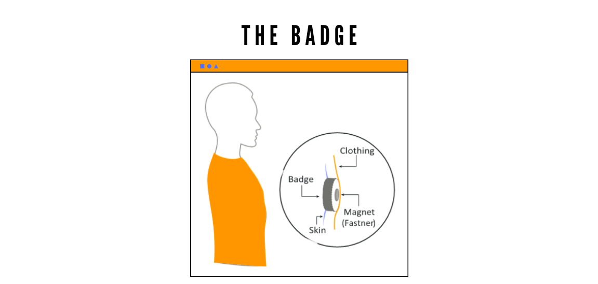
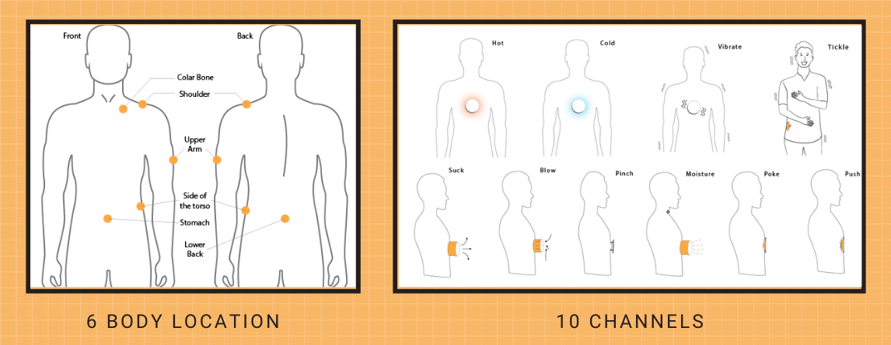
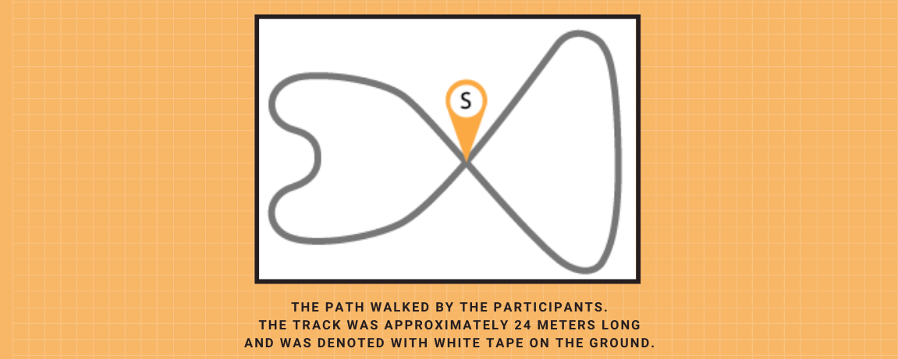
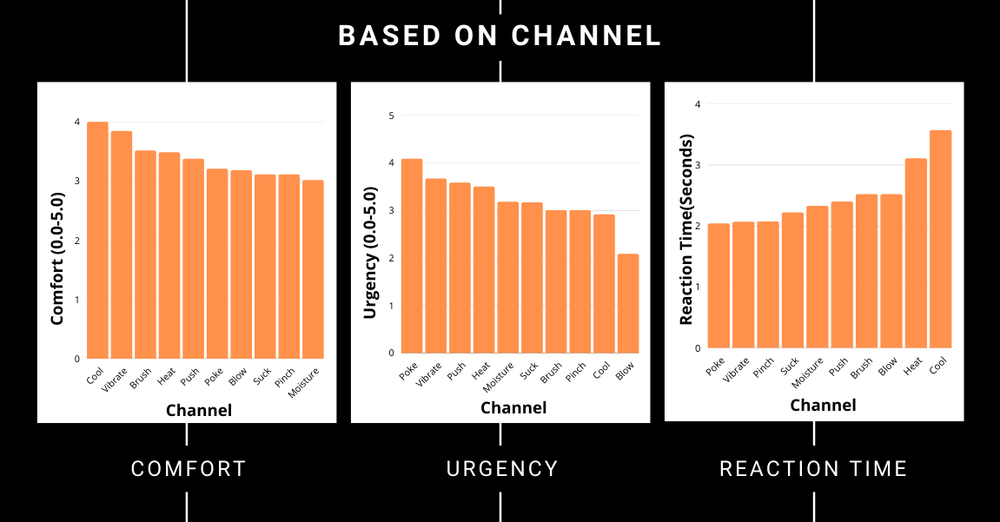
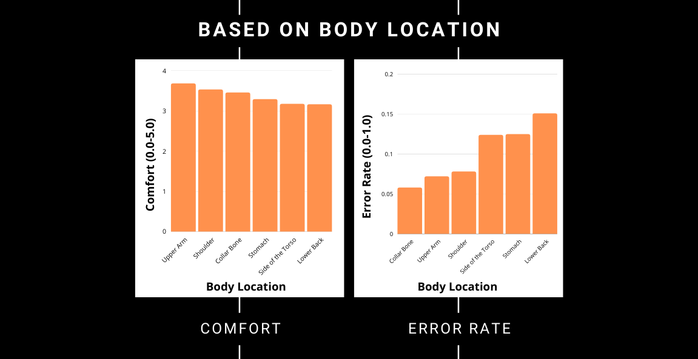

Soma-Noti [Accepted CHI 2021]
[User Study]
Comparison of Notification Channels for On-Clothing Wearables  We investigate the idea of delivering notifications through devices worn on the underside of a user’s clothing. A wearable worn in such a manner is in direct contact with a user’s skin. We leverage this proximity to test the performance of 10 on-skin sensations as methods of notification delivery. We developed prototypes for each stimulus and conducted a user study to evaluate them across 6 locations found commonly covered by clothing. To investigate the effectiveness of different on-skin sensations across locations, we created hardware prototypes for wearable badges with two components:- a set of ten badges equipped with different types of actuators
- a fanny pack containing the microcontroller and power source which acts as our processing unit
User Study
The experiment was a 10 x 6 within-subject design with two independent variables: 10 channel: Press, Poke, Pinch, Heat, Cool,Blow, Suck, Vibrate, Moisture, Brush 6 body location: Collar bone, Shoulder, Stomach, Side of the torso, Upper arm, Lower back. The orders of channel and location were counterbalanced with Latin Square. We considered two dependent variables: Response Time (RT) and Error Rate (ER). We also asked the participants to rate each location-channel pair for comfort and each channel for a sense of urgency on a five-point Likert scale.
For each output, a participant was given a demonstration of the stimulus from the badge and then asked to wear it at one of the six body locations. After wearing the badge, participants were instructed to hold their phone in their hands (with our app open) and walk at a normal pace around a track constructed in our laboratory.
The walking direction was counterbalanced between clockwise and counter-clockwise directions. We chose walking as it has a slightly greater cognitive load than sitting or standing still, and thus it is a more robust testing condition. While walking, they were introduced with the stimulus 5 times at random intervals. Participants were instructed to press the button on the app as soon as they felt a stimulus. No feedback was given on responding. Participants answered online survey questions between the different outputs and locations. We ran 10 x 6 x 5 (channel x location x repetition) trials, for a total of 300 trials per participant.
User Demographics
- Age: 18-28
- 12 Participants: 4 females, 8 Males
RESULTS
We conducted the first study on notification channels in the context of devices attached to our everyday clothing. Collar bone, shoulder and upper arm are the most suitable locations due to lower error rates and higher comfort ratings. Results indicate significant differences in reaction time and error rates which may influence the design of future on-clothing wearables.
We found out that error rate is affected by body location while reaction time is only affected by channel.
